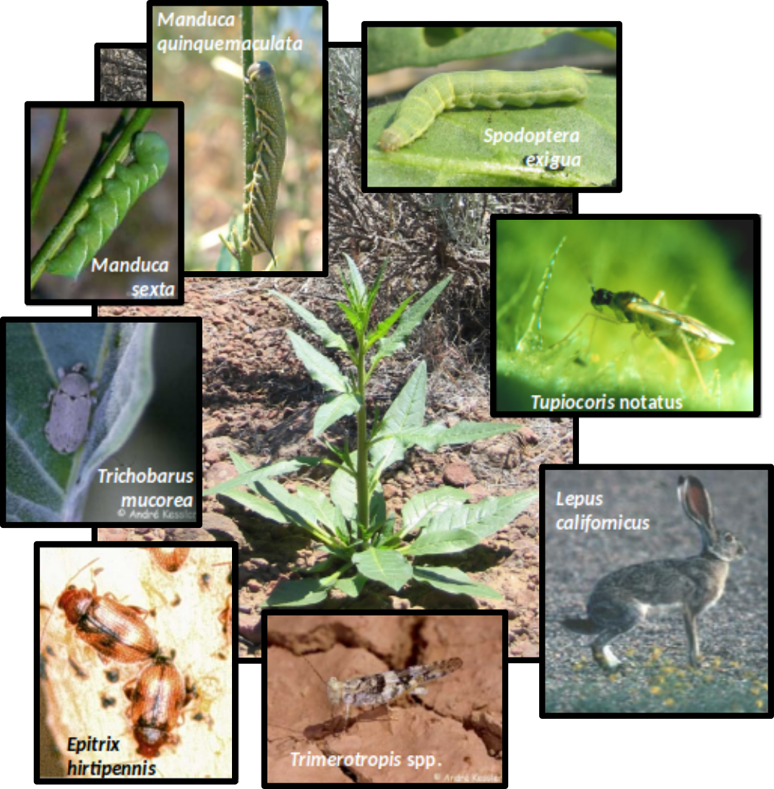
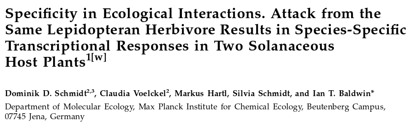
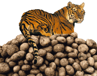
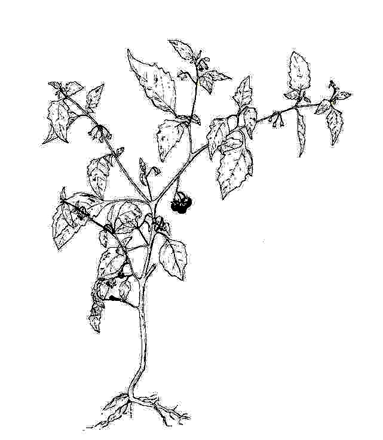
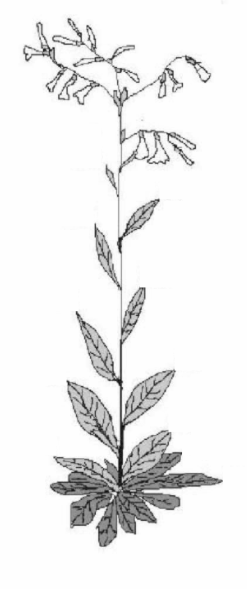
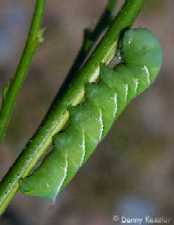
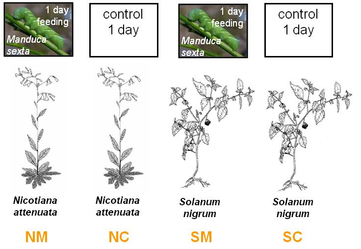

Advanced Practical Genetics
Microarray - Hands-on data analysis
203.305
Dr. Pierre-Yves Dupont, Postdoctoral Researcher
Computational Biology Research Group
http://bit.ly/massey_203305
Lab case study: Herbivory in Nicotiana attenuata (Solanaceae)
|

|
What type of research?
Which genes and metabolites defend plants against insects?
Costs and benefits of defense
Genetic engineering of defense traits
Plant pollination
|
Lab case study: Herbivory in Nicotiana attenuata (Solanaceae)
|
|
Why N. attenuata?
Diverse herbivore community
High plasticity (direct and indirect defense)
Easily cultivated annual species
|
Case study - Chips, veggies & vegetarians

Case study - Chips, veggies & vegetarians
| The chip: cDNA array with 15,264 potato genes from TIGR (The Institute for Genomic Research) |
 |
|
| The veggies |
The vegetarian |
Solanum nigrum
Black nightshade |
 |
Nicotiana attenuata
Coyote tobacco |
 |
Manduca sexta |
 |
- Question:
- Do tobacco and black nightshade plants respond differently to caterpillar attack?
Microarray Case Study
RNA source
2 herbivore treatments and 2 controls

Microarray Case Study
6 arrays
Each arrow represents one array. Herbivore-induced tissue (Cy3) was co-hybridised control tissue (Cy5). Each comparison was replicated three times.

What will you do in the lab?
- R warm-up exercise. Identification of differentially expressed genes
- Identification of differentially expressed biological processes